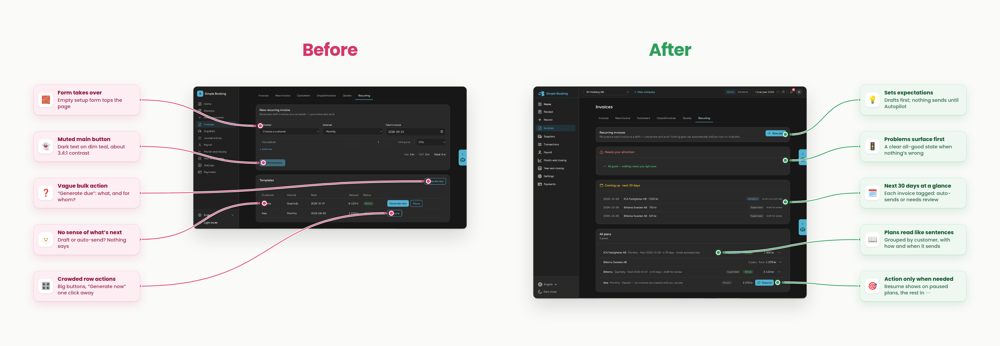

Invoices
Users couldn't see which invoices were paid, or find a specific one.
- No clear statuses → colour-coded status on every invoice
- No way to find an invoice → search and filtering
Recurring invoices
The setup form came first, so users couldn't see what would be sent next.
- Setup form on top → expectations and upcoming schedule first
- No upcoming view → next 30 days at a glance
- Crowded row actions → actions only when needed
